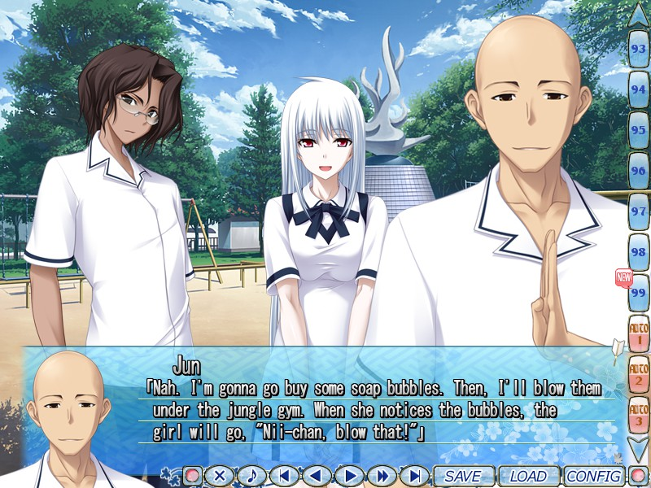
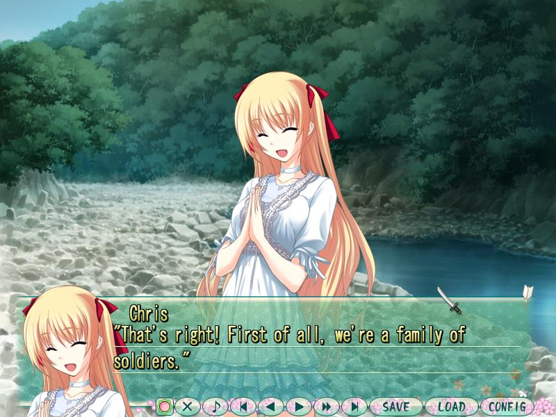
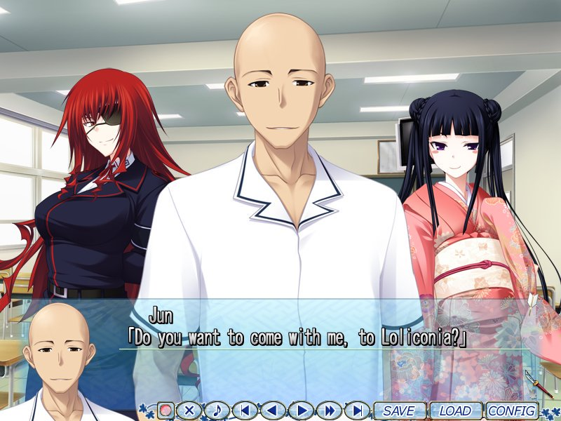
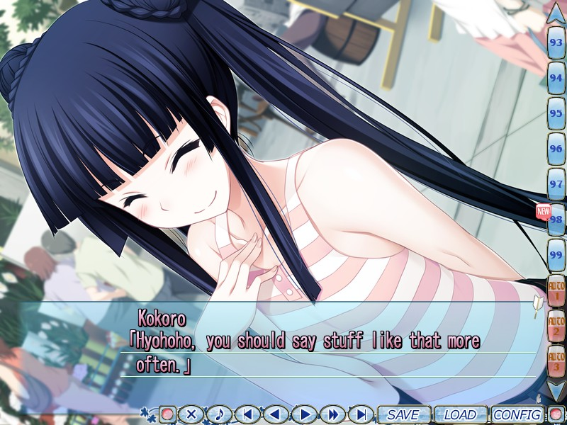

Maji de Watashi ni Koishinasai!
Release Date:
October 30, 2009
Developer:
Translator
Genres:
Comedy, Romance
Novel Length:
Anime Adaptation:
Prequel:
None


Reviews
"The Bottom Line here is that if you enjoy Majikoi's attempts at comedy and action then you will have fantastic fun with it that few other VN's will be able to compare to."
"...If you are looking for a light-hearted, comedy with fun and quirky characters with some action on the side then I would highly recommend this game if the humour is to your taste."
"A highly enjoyable eroge for those looking for comedy and over-the-top situations, as well as fabulous friendship."
About This Novel
Kawakami City is famous for its strong dedication to its samurai ancestors. A strong fighting spirit is always valued and it's even an important factor in succeeding in school there.
Yamato, a second year student from Kawakami Highchool is always with his close friends (4 boys and 3 girls). They have known each other since they were young and have done loads of things together. They have many other friends, but these seven people are a close-knit group, they even have a secret base where they meet...
With the new semester, they welcome two girls into their group and shortly after things start to change...
(From VNDB)
Technical Details
Platforms:
Windows
Resolution:
4:3
English:
Animated Scenes:
None
Voiced:
Fully
You Might Also Like
Get It Now

Recommended
Get It